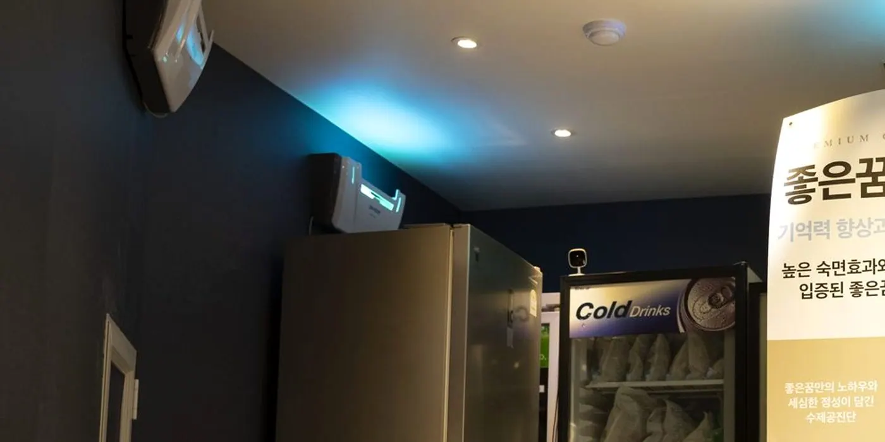

당화혈색소는 대략 지난 2~3개월의 평균 혈당 흐름을 보여 주는 수치라 너무 자주 재기보다 일정한 간격을 두고 다시 재는 편이 흐름을 보기 좋고, 그사이 식사 순서·걷기·잠·체중을 기록해 두면 수치를 읽는 데 도움이 됩니다.
여쭙는 것
- 가장 최근 당화혈색소는 언제, 어디서 재셨고 수치는 얼마였나요?
- 그 전 수치도 기억하시나요? 두세 번의 기록이 있으면 흐름을 보기 쉽습니다.
- 공복 혈당이나 식후 혈당을 따로 재고 계신가요?
생활에서 해 볼 것
- 첫 주: 지금 생활을 바꾸지 말고 그대로 기록만 합니다. 식사 시각, 무엇을 먼저…
- 둘째 주: 기록을 보고 바꾸기 쉬운 것 하나만 고릅니다. 예를 들어 식사할 때 채소…
- 셋째~넷째 주: 저녁 식사 뒤 10~15분 걷기를 더합니다. 밖이 춥다면 실내에서…
한의원에서 함께 살필 것
- 경계 범위 수치를 듣고 생활을 어떻게 바꿀지 순서를 함께 정하고 싶은 경우
- 생활을 바꾸고 있지만 식사 뒤 졸음, 피로, 잦은 허기가 이어지는 경우
- 잠이 짧거나 스트레스가 많아 식사 리듬이 자주 무너지는 경우
먼저 확인이 필요한 신호
- 갈증과 잦은 소변, 이유 없는 체중 감소가 함께 있는 경우
- 혈당이 매우 높게 나오면서 메스꺼움, 구토, 숨이 가쁜 느낌이 있는 경우
- 당뇨병 약을 먹는 중에 식은땀, 손 떨림, 심한 허기, 어지러움이 갑자기 생기는 경우
당화혈색소는 혈액 속 적혈구의 혈색소에 포도당이 얼마나 붙어 있는지를 보는 수치로, 대략 지난 2~3개월 동안의 평균적인 혈당 흐름을 보여 줍니다. 그래서 일주일이나 한 달 만에 다시 재면 생활을 바꾼 결과가 아직 수치에 충분히 담기지 않는 경우가 많고, 흔히 3개월 안팎의 간격을 두고 다시 재는 방식이 쓰입니다. 다만 당뇨병 약을 복용 중이거나 다른 병원에서 관리받고 계신다면 재는 간격은 그 병원의 안내가 먼저입니다. 좋은꿈참사랑한의원에서는 원내 당화혈색소 검사기로 수치를 확인할 수 있고, 수치 하나보다 그사이의 식사, 걷기, 잠, 체중 기록을 함께 놓고 흐름을 읽는 데 무게를 둡니다. 검사 소요 시간과 비용, 보험 적용 여부는 방문 전 전화로 확인해 주세요.
왜 간격을 두고 재나요
- 적혀구는 대략 3~4개월 정도 몸속을 돌다 새로 바뀝니다. 당화혈색소는 이 기간 동안 쌓인 결과라서, 최근 몇 주의 변화만으로는 수치가 크게 움직이지 않을 수 있습니다.
- 그날 아침 혈당은 전날 저녁 식사, 잠, 스트레스에 따라 크게 흔들리지만 당화혈색소는 그런 하루의 흔들림이 비교적 적게 반영됩니다. 그래서 생활을 바꾼 흐름을 보는 데 쓰기 좋습니다.
- 너무 짧은 간격으로 재면 "열심히 했는데 그대로다"는 실망이 커지기 쉽고, 이 실망이 생활 습관을 놓게 만드는 경우도 있습니다.
- 반대로 1년에 한 번 건강검진 때만 보면 그사이 어떤 생활이 수치에 영향을 주었는지 연결하기가 어렵습니다.
- 빈혈이 있거나, 최근 피를 많이 흘렸거나, 수혈을 받았거나, 임신 중이거나, 신장 기능이 떨어진 경우에는 당화혈색소가 실제 혈당 흐름과 다르게 나올 수 있어 다른 검사와 함께 해석이 필요합니다.
- 한의학에서는 수치와 함께 식사 뒤 졸음, 갈증, 피로, 손발의 감각, 잠과 대변의 흐름을 함께 살펴 몸 전체의 리듬 안에서 혈당 관리를 바라봅니다.

먼저 이렇게 여쭙니다
- 가장 최근 당화혈색소는 언제, 어디서 재셨고 수치는 얼마였나요?
- 그 전 수치도 기억하시나요? 두세 번의 기록이 있으면 흐름을 보기 쉽습니다.
- 공복 혈당이나 식후 혈당을 따로 재고 계신가요?
- 당뇨병 약이나 혈압약, 콜레스테롤 약을 드시나요? 약을 바꾼 시기가 있나요?
- 최근 몇 달 사이 체중이 늘거나 줄었나요?
- 하루 식사 시각과 간식, 단 음료를 드시는 때는 언제인가요?
- 걷기나 운동은 일주일에 몇 번, 몇 분 정도 하시나요?
- 잠은 몇 시간 주무시고, 밤에 자주 깨시나요?
- 빈혈이나 신장 질환을 진단받은 적이 있나요?
- 지난번 상담에서 정했던 생활 변화가 지금 어떻게 이어지고 있는지 함께 여쭙니다.
일상에서 먼저 해 볼 수 있는 것
다음 검사까지 3개월을 기준으로, 기록과 생활을 어떻게 나누어 가면 좋은지 적었습니다. 당뇨병 약을 복용 중이라면 약을 처방한 의사의 안내를 먼저 따라 주세요.
- 첫 주: 지금 생활을 바꾸지 말고 그대로 기록만 합니다. 식사 시각, 무엇을 먼저 먹었는지, 단 음료와 간식, 걸은 시간, 잠든 시각과 깬 시각을 하루 다섯 줄로 적습니다.
- 둘째 주: 기록을 보고 바꾸기 쉬운 것 하나만 고릅니다. 예를 들어 식사할 때 채소와 단백질 반찬을 먼저 몇 숟가락 먹고 밥은 그다음에 먹는 순서로 바꿉니다.
- 셋째~넷째 주: 저녁 식사 뒤 10~15분 걷기를 더합니다. 밖이 춥다면 실내에서 제자리걷기나 집안일로 대신해도 됩니다.
- 둘째 달: 늦은 밤 간식과 단 음료를 일주일에 몇 번 드시는지 세어 보고, 그 횟수를 절반으로 줄이는 것을 목표로 합니다. 잠드는 시각도 30분씩 당겨 봅니다.
- 셋째 달: 일주일에 한 번, 같은 요일 아침 공복에 체중을 재서 기록합니다. 허리둘레도 한 달에 한 번 함께 재면 좋습니다.
- 재검 2주 전: 지금까지의 기록을 한 장으로 정리합니다. 잘 지켜진 것과 어려웠던 것을 한 줄씩 적어 두면 상담 시간이 알차집니다.
- 재검 당일: 당화혈색소 자체는 식사 여부의 영향을 크게 받지 않는 편이지만, 같은 날 공복 혈당이나 다른 혈액 검사를 함께 하신다면 공복 여부를 미리 전화로 확인해 주세요.

상황별 예시
예를 들어 건강검진에서 처음으로 당화혈색소가 경계 범위에 있다는 말을 들은 경우가 있습니다. 일반적으로 5.7~6.4% 사이를 당뇨병 전 단계로 보는 기준이 많이 쓰이는데, 이 시기에는 식사 순서와 걷기, 잠을 3개월 정도 정리해 본 뒤 다시 재서 흐름을 보는 방식을 많이 씁니다. 그사이 가정 혈당계로 식후 혈당을 가끔 재 보면 어떤 식사가 혈당을 크게 올리는지 감을 잡는 데 도움이 됩니다.
예를 들어 이미 당뇨병 약을 복용 중이고 내과에서 정기적으로 수치를 보고 있는 경우가 있습니다. 이때는 내과의 검사 간격과 약 조정이 우선이며, 한의원에서는 내과 결과지를 함께 보면서 식사 뒤 피로, 갈증, 잠, 손발 저림처럼 생활에서 느끼는 불편을 살피는 데 무게를 둡니다. 약은 처방한 의사와 상의 없이 줄이거나 끊지 않습니다.
예를 들어 한 달 만에 다시 쟀는데 수치가 거의 그대로여서 실망하신 경우가 있습니다. 당화혈색소는 몇 달의 흐름이 쌓이는 수치라 한 달 만에는 변화가 충분히 담기지 않을 수 있습니다. 이럴 때는 수치보다 그사이 식후 혈당 기록, 체중, 허리둘레, 잠의 변화를 함께 보며 지금 방향이 맞는지를 먼저 확인합니다.
예를 들어 공복 혈당은 괜찮은데 당화혈색소만 높게 나온 경우도 있습니다. 식후 혈당이 크게 오르는 생활인지, 빈혈 같은 다른 요인이 있는지를 함께 살펴야 하므로 식사 기록과 다른 혈액 검사 결과를 함께 가져와 주세요.
자주 하시는 오해
- 검사 전 며칠만 식사를 조심하면 수치가 내려갈 것이라 생각하시는 분이 있습니다. 당화혈색소는 몇 달의 흐름을 보여 주는 수치라 며칠의 조절로는 크게 달라지지 않습니다.
- 수치가 정상 범위로 들어오면 관리를 멈춰도 된다고 여기기 쉽습니다. 생활이 다시 예전으로 돌아가면 수치도 따라 움직일 수 있어, 간격을 조금 넓혀서라도 흐름을 이어 보는 편이 좋습니다.
- 자주 잴수록 관리가 잘 된다고 생각하는 분도 있습니다. 잦은 재검보다 일정한 간격과 그사이의 기록이 흐름을 읽는 데 더 쓸모가 있습니다.
- 당화혈색소 하나로 모든 것을 판단할 수 있다고 생각하기 쉽지만, 공복 혈당, 식후 혈당, 체중, 허리둘레를 함께 보는 것이 정확합니다.

스스로 점검해 보세요
- 최근 당화혈색소 수치와 잰 날짜를 기억하지 못한다.
- 그 전 수치와 비교해 본 적이 없다.
- 식사할 때 밥부터 먹는 날이 많다.
- 저녁 식사 뒤 바로 앉거나 눕는 날이 일주일에 5번 이상이다.
- 단 음료나 늦은 밤 간식을 일주일에 3번 이상 먹는다.
- 잠이 6시간보다 짧은 날이 많다.
- 최근 3개월 사이 체중이 늘었다.
- 빈혈이나 신장 질환을 진단받은 적이 있다.
해당하는 항목이 많을수록 다음 검사까지의 기록이 수치를 읽는 데 더 큰 도움이 됩니다. 마지막 항목에 해당한다면 수치 해석에 주의가 필요하니 꼭 말씀해 주세요.
한의원에서 함께 살필 수 있는 경우
- 경계 범위 수치를 듣고 생활을 어떻게 바꿀지 순서를 함께 정하고 싶은 경우
- 생활을 바꾸고 있지만 식사 뒤 졸음, 피로, 잦은 허기가 이어지는 경우
- 잠이 짧거나 스트레스가 많아 식사 리듬이 자주 무너지는 경우
- 체중과 체성분 변화를 인바디 770으로 함께 보며 흐름을 확인하고 싶은 경우
- 내과에서 관리 중이지만 생활 속 불편함을 따로 살피고 싶은 경우
좋은꿈참사랑한의원에서는 첫 방문 때 그동안의 수치와 검사 날짜, 복용 중인 약, 식사와 걷기, 잠의 흐름을 차례로 여쭙니다. 그 뒤 모든 분께 진맥을 하며 몸 전체의 리듬과 긴장도를 살피고, 필요하면 혀와 배의 상태도 함께 봅니다. 원내 당화혈색소 검사기와 혈액 검사기, 인바디 770 가운데 필요한 검사를 상의해 정하고, 결과는 일반적인 기준과 함께 지금 생활에 비추어 설명드립니다. 다음 검사 시기와 그때까지 기록할 내용을 정리해 드리고, 다음 방문에서는 지난번 정한 것을 이어서 확인합니다. 이종호 대표원장을 비롯해 조영기 원장, 정원영 원장이 같은 방식으로 진료합니다. 수치가 높거나 다른 검사가 필요해 보이면 내과 진료를 먼저 안내합니다.

지켜볼 기준과 바로 진료가 필요한 신호
- 생활을 바꾼 뒤 3개월 안팎에 다시 재서 흐름을 확인하는 방식을 많이 씁니다.
- 일반적으로 6.5% 이상이 나오면 당뇨병 진단 기준에 해당할 수 있어 내과에서 확인이 필요합니다.
- 두 번 연속 수치가 오르고 있다면 생활 기록을 다시 살피고, 내과 진료도 함께 받아 보세요.
- 갈증이 심해 물을 계속 마시고, 소변을 자주 보며, 이유 없이 체중이 줄고 있다면 다음 검사를 기다리지 말고 바로 병원 진료를 받으세요.
이렇게 기록해 오시면 상담이 쉬워집니다
- 지금까지의 당화혈색소 수치와 잰 날짜, 잰 곳
- 공복 혈당, 식후 혈당을 재셨다면 날짜와 시각, 그 전 식사 내용
- 일주일 중 하루를 골라 적은 식사 시각과 먹은 순서
- 식사 뒤 걷기를 한 날과 시간
- 잠든 시각과 깬 시각
- 매주 같은 요일 아침의 체중과 한 달에 한 번 허리둘레
- 복용 중인 약과 영양제, 바꾼 날짜

이런 증상은 먼저 확인이 필요합니다
- 갈증과 잦은 소변, 이유 없는 체중 감소가 함께 있는 경우
- 혈당이 매우 높게 나오면서 메스꺼움, 구토, 숨이 가쁜 느낌이 있는 경우
- 당뇨병 약을 먹는 중에 식은땀, 손 떨림, 심한 허기, 어지러움이 갑자기 생기는 경우
- 발에 상처가 생겼는데 잘 아물지 않거나 색이 변하는 경우
- 눈이 갑자기 흐려지는 경우
이런 신호가 있다면 내과나 응급실에서 먼저 확인하세요. 당뇨병 약을 비롯해 복용 중인 약은 처방한 의사와 상의 없이 줄이거나 끊지 않습니다. 의식이 흐려지거나 반응이 둔해진다면 119에 바로 연락하세요.
함께 읽으면 좋은 글
- 당화혈색소(HbA1c) 수치는 무엇을 뜻하나요?
- 당화혈색소 검사를 하는 날 무엇을 준비하면 좋을까요?
- 가정에서 잰 혈당 기록에는 어떤 내용을 함께 적어 가면 좋을까요?
한눈에 보는 표
| 구분 | 핵심 |
|---|---|
| 여쭙는 것 | 가장 최근 당화혈색소는 언제, 어디서 재셨고 수치는 얼마였나요? 그 전 수치도 기억하시나요? 두세 번의 기록이 있으면 흐름을 보기 쉽습니다. |
| 생활에서 해 볼 것 | 첫 주: 지금 생활을 바꾸지 말고 그대로 기록만 합니다. 식사 시각, 무엇을 먼저 먹었는지, 단 음료와 간식, 걸은 시간, 잠든 시각과 깬 시각을 하루 다섯 줄로 적습니다. 둘째 주: 기록을 보고 바꾸기 쉬운 것 하나만 고릅니다. 예를 들어 식사할 때 채소와 단백질 반찬을 먼저 몇 숟가락 먹고 밥은 그다음에 먹는 순서로 바꿉니다. |
| 한의원에서 함께 살필 것 | 경계 범위 수치를 듣고 생활을 어떻게 바꿀지 순서를 함께 정하고 싶은 경우 생활을 바꾸고 있지만 식사 뒤 졸음, 피로, 잦은 허기가 이어지는 경우 |
| 먼저 확인이 필요한 신호 | 갈증과 잦은 소변, 이유 없는 체중 감소가 함께 있는 경우 혈당이 매우 높게 나오면서 메스꺼움, 구토, 숨이 가쁜 느낌이 있는 경우 |
자주 묻는 질문
당화혈색소는 한 달마다 재면 안 되나요?
재는 것 자체가 문제는 아니지만, 몇 달의 흐름이 쌓이는 수치라 한 달 만에는 변화가 충분히 담기지 않을 수 있습니다. 약을 복용 중이라면 처방한 병원의 간격 안내를 먼저 따라 주세요.
검사 전날 밥을 굶어야 하나요?
당화혈색소 자체는 식사의 영향을 크게 받지 않는 편입니다. 다만 같은 날 공복 혈당이나 다른 혈액 검사를 함께 한다면 공복이 필요할 수 있어 방문 전 전화로 확인해 주세요.
한의원에서 잰 수치를 내과에 가져가도 되나요?
결과를 기록해 두셨다가 내과 진료 때 함께 보여 드리면 흐름을 보는 데 참고가 됩니다. 진단과 약 조정은 내과 의사와 상의해 주세요.
수치가 내려가지 않으면 어떻게 하나요?
그사이 기록을 함께 보며 어떤 부분이 어려웠는지부터 살핍니다. 수치가 계속 오른다면 내과 진료를 함께 받으시기를 권합니다.
검사 비용과 소요 시간은 어떻게 되나요?
검사 소요 시간과 비용, 보험 적용 여부는 방문 전 02-815-7510으로 전화해 확인해 주세요.
이 글은 일반적인 건강 정보이며 개인의 진단이나 치료를 대신하지 않습니다. 증상이 있거나 복용 중인 약이 있다면 진료를 통해 확인하세요. 치료 효과는 개인마다 다를 수 있습니다.
작성 기준: 일반적으로 알려져 있는 건강 정보를 참고해 정리했습니다(대표원장 감수). 증상 기록은 1~2주 동안 하루 1회, 비슷한 시간에 적어 오시면 지난 상태와 비교하기 쉽습니다.
좋은꿈참사랑한의원은 재진 때 지난번 이야기부터 이어서 여쭙니다. 진료시간과 예약은 오시는 길에서 확인하세요.